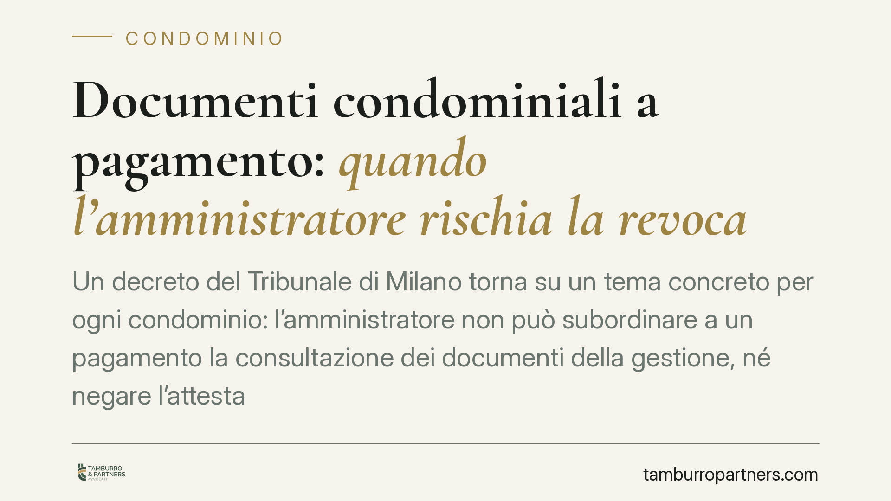

Documenti condominiali a pagamento: quando l'amministratore rischia la revoca
Un decreto del Tribunale di Milano torna su un tema concreto per ogni condominio: l'amministratore non può subordinare a un pagamento la consultazione dei documenti della gestione, né negare l'attestazione sulla situazione debitoria. Chi lo fa viola il dovere di trasparenza e incrina il rapporto fiduciario, aprendo la strada alla revoca giudiziale. Vediamo cosa comporta per i condòmini.

Il caso
Il Tribunale di Milano, con un decreto reso in sede di volontaria giurisdizione, ha confermato la revoca di un amministratore che aveva condizionato al pagamento di una somma la possibilità per i condòmini di prendere visione dei documenti contabili e amministrativi del condominio. Alla richiesta si aggiungeva il rifiuto di rilasciare l'attestazione sulla situazione debitoria del fabbricato.
Secondo il giudice, queste condotte non rappresentano semplici inadempimenti formali: incidono sul nucleo del rapporto, cioè sulla fiducia che lega i condòmini a chi gestisce il loro patrimonio comune.
Inquadramento normativo
Il diritto dei condòmini di consultare la documentazione condominiale è un corollario dell'obbligo di rendiconto previsto dall'articolo 1130, n. 10, del Codice civile, che impone all'amministratore di tenere la contabilità e di rendere conto della gestione. L'articolo 1129 c.c. rafforza questo quadro: al comma 2 obbliga l'amministratore a comunicare i propri dati e il luogo dove sono custoditi i registri, e al comma 12 elenca le irregolarità che legittimano la revoca giudiziale su ricorso anche di un solo condòmino.
Tra queste irregolarità la giurisprudenza include, in via interpretativa, la condotta di chi ostacola l'accesso ai documenti. La consultazione è un diritto che non costa nulla: il condòmino sopporta solo le eventuali spese materiali di copia (fotocopie, scansioni), ma non può essere obbligato a "pagare per vedere". Quanto all'attestazione sulla situazione debitoria, l'articolo 1130, n. 9, c.c. ne impone il rilascio su richiesta dell'avente diritto, tipicamente in occasione della compravendita di un immobile.
Perché il principio conta
La trasparenza non è una cortesia, è un obbligo strutturale del mandato. L'amministratore gestisce denaro altrui e deve poterne dare conto in ogni momento. Subordinare la visione dei documenti a un corrispettivo rovescia questo rapporto: trasforma un diritto in una merce e sottrae al controllo collettivo la gestione.
Il rifiuto di rilasciare l'attestazione sui debiti, inoltre, produce danni concreti. Chi acquista un'unità immobiliare risponde in solido con il venditore delle spese dell'anno in corso e di quello precedente (articolo 63 delle disposizioni di attuazione del Codice civile). Senza attestazione, l'acquirente non sa a quali debiti va incontro: l'amministratore che la nega espone i condòmini a responsabilità e blocca di fatto le compravendite.
Implicazioni pratiche per i condòmini
Il decreto milanese conferma un orientamento consolidato ma utile da ricordare: per ottenere la revoca non serve attendere l'assemblea. Basta il ricorso di un singolo condòmino al tribunale, che decide con procedimento camerale, quando l'amministratore incorre nelle gravi irregolarità di gestione.
L'ostruzione all'accesso documentale rientra tra queste irregolarità perché impedisce ai condòmini di verificare la correttezza della gestione. Non occorre dimostrare un danno economico quantificato: è sufficiente la lesione del dovere di trasparenza e la rottura del vincolo fiduciario.
Attenzione, però, a distinguere. La richiesta di consultazione deve essere ragionevole: il condòmino ha diritto di accedere ai documenti, ma la consultazione va coordinata con l'amministratore su tempi e modalità compatibili con l'attività d'ufficio. Non è abuso chiedere di vedere i registri; può esserlo pretendere accesso immediato e illimitato senza preavviso.
Cosa fare in concreto
- Formalizzate la richiesta per iscritto. Inviate la domanda di consultazione via PEC o raccomandata, indicando i documenti e proponendo date per l'accesso. La prova scritta è decisiva in un eventuale ricorso.
- Concordate le modalità. Chiarite che intendete sostenere le sole spese materiali di copia e non un compenso per la visione. Chiedete un preventivo scritto delle copie.
- Documentate il rifiuto o la richiesta di pagamento. Conservate ogni risposta dell'amministratore: è l'elemento che fonda la gravità dell'irregolarità.
- Valutate il ricorso al tribunale. In presenza di ostruzione reiterata, consigliamo di considerare la revoca giudiziale senza attendere necessariamente la convocazione assembleare.
- In fase di compravendita, pretendete l'attestazione sui debiti. Acquirente e venditore dovrebbero chiederla prima del rogito per evitare responsabilità solidali impreviste.
Disclaimer
Contributo informativo a cura di Tamburro & Partners - Avv. Giuseppe Tamburro. Non costituisce parere legale.
Ogni condominio ha una storia a sé.
Se gestisci un'amministrazione e vuoi un confronto su una specifica questione condominiale, scrivi allo studio. Ti rispondiamo entro un giorno lavorativo.